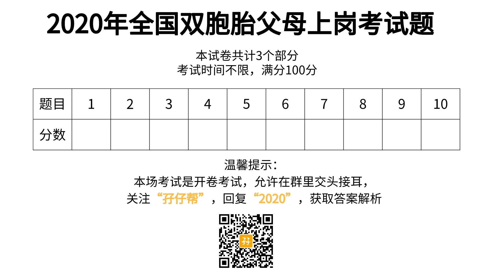
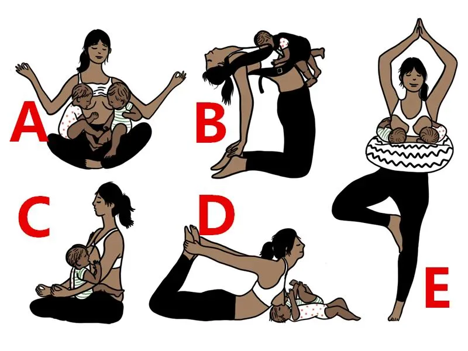
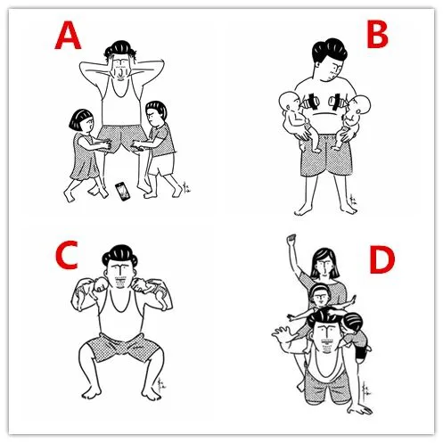

关注我们，全面了解双胞胎育儿知识
文|圆圈妈
网图|侵删
2020年第一天，孖仔帮送出了一份新年大礼包：双胞胎育儿干货集锦，都收到了吗？都打开看了吗？（公众号对话框输入“2020”获取）
这新年礼物可不是白送的哈，收到后要赶紧打开看，而且要仔细阅读，因为那也是一份划重点的考试大纲。
--什么？考试？考什么试？
--全国双胞胎父母上岗考试
别愣着了！快看下考前须知，马上要开考了！
考试对象：双胞胎爸爸妈妈含准爸爸准妈妈
温馨提示：本场考试属于开卷考试，没有监考老师，没有答题卡，允许交头接耳，互相讨论，互抄答案，甚至…质疑答案！
过几天就是春节了，请双胞胎家长考生们认真做题，争取考100分回家过年，给亲戚朋友们晒一晒哈！
第一部分：双胎孕育
1
1，微信公众号【孖仔帮】的“孖”字怎么读?
A：ma
B：zai
C：zi
D：以上都不是
点击空白处查看答案
A
2
2，双胞胎的分类主要有哪几种?
A：单绒双羊 ，双绒双羊
B：单绒单羊，单绒双羊
C：单绒双羊，单绒单羊，双绒双羊
D：单绒单羊，双绒双羊
点击空白处查看答案
C
3
3，确认绒毛膜性的最佳时间是？
A：6--8周
B：8--9周
C：9--10周
D：11--13周
点击空白处查看答案
D
4
4，啥时候要做NT（颈项透明层）？
A：8周
B：9周
C：10周
D：11--12周
点击空白处查看答案
D
5
5，双胎妊娠，以下哪个产检项目没有必要做？
A：唐筛
B：NT
C：无创
D：糖筛
点击空白处查看答案
A
6
6，双胎孕28周之后，多久做一次B超？
A：2周一次，必要时1周一次
B：3--4周一次
C：没啥事可以不做
D：以上都不对
点击空白处查看答案
A
7
7，在产前确定同卵还是异卵，最可靠的办法是以下哪种？
A：看胎盘
B：DNA纹印验证
C：看绒毛膜
D：看黄体
点击空白处查看答案
B
8
8，哪种情况最容易发生双胎输血综合征（TTTs）？
A：单绒单羊
B：单绒双羊
C：双绒双羊
D：以上都不是
点击空白处查看答案
B
9
9，减少双胎妊娠早产风险，以下做法正确的是？
A：绝对卧床，躺到生
B：定期产检，科学均衡饮食，规律睡眠
C：多活动，
D：使用孕激素
点击空白处查看答案
B
10
10，双绒毛膜双胎，以下哪种情况可考虑顺产？
A：双头位
B：头臀位
C：第一胎儿头先露
D：听医生的综合评估，结合自身情况决定
点击空白处查看答案
D
第二部分：双胎养育
1
1，双胞胎究竟要几个人带才不累？
A:1对2
B:2对2
C:3对2
D:N个人带都TM累
点击空白处查看答案
D
2
2，两个娃同时哭，应该抱哪个？
A:哭得最凶那个先抱
B:随机
C:两个一起抱
D:两个都不抱
点击空白处查看答案
B
3
3，当双胞胎宝宝遇到母乳不够时，怎么办？
A: 暴力催乳，疯狂喝汤，加速产奶
B：均衡饮食，规律睡眠，科学通乳，必要时辅助配方奶
C: 有就喝，没有就喝奶粉
D：放弃母乳
点击空白处查看答案
B
4
4，双胞胎宝宝的睡觉最佳方式是？
A:跟大人一起同房同床睡
B:两人独立小床睡
C:婆婆带一个，妈妈带一个
D:两人同睡一床
点击空白处查看答案
B
5
5，双胞胎之一生病了，以下做法错误的是？
A:赶紧隔离，避免交叉感染
B:第一时间消毒共用过的餐具玩具
C:给没有生病的那个吃药预防下
D:有条件的话，分开带养一段时间
点击空白处查看答案
C
6
6，双胞胎睡眠训练，以下做法正确的是？
A:不管怎么哭都不去抱
B:越早开始训练越好
C:遵循内心的感受，不强迫
D:加派人手，让更多人出谋划策
点击空白处查看答案
C
1
7,宝妈专属题：以下哪个图是你的喂母乳绝招？
点击空白处查看答案
送分题
8
8，双胞胎要不要穿一样的衣服？
A:要，不然两个人都会抢
B:不要，本来就一脸懵逼，穿一样的更添堵
C:无所谓，怎么方便怎么来
D:以上都是馊主意
点击空白处查看答案
C
9
9, 双胞胎宝宝如何喂养更科学？
A:按需喂养或按时喂养
B:同时喂或分开喂
C:无固定标准，视宝宝发展程度和宝妈产奶量而定
D：以上都不靠谱
点击空白处查看答案
C
10
10，宝爸专属题：以下哪个图是你的真实写照？
点击空白处查看答案
送分题
第三部分：双胎教育
1
1，双胞胎抢玩具了，家长的正确做法是？
A:及时干预，粗暴呵斥
B:赶紧拿其他玩具替代，平息战争
C:抢就抢呗，等着看好戏
D:先观察，找原因，出面调停，乘机复盘，加强引导
点击空白处查看答案
D
2
2，如何给双胞胎准备玩具或礼物？
A: 买一样的
B: 买不一样的
C：根据孩子们的喜好挑选或者让他们自行选择
D: 以上都是馊主意
点击空白处查看答案
C
3
3，当双胞胎打架了，以下做法错误的是？
A：一刀切，两个都连带一起惩罚
B: 言传身教告诉孩子正确表达不愉快情绪的方法
C: 观察双胞胎之间的互动，探索冲突行为背后的情绪
D: 避免过份干涉，给予孩子一个机会去了解自己和他人的需要
E: 借此机会帮助孩子建立自我概念,引导孩子如何尊重和体谅他人、平衡自己和他人的需要
点击空白处查看答案
A
4
4，缓解双胞胎冲突的方法，以下做法错误的是？
A: 经常拿两个人作比较
B: 在冲突爆发前找出争执发生的原因，鼓励孩子谈谈他们内心的感受
C: 制造与双胎之一单独相处的机会
D: 呵护孩子的独特性，允许有不同喜好并适当满足合理需求
点击空白处查看答案
A
5
5：双胞胎谁大谁小，谁说了算？
A: 谁先出来谁是老大
B：看家长心情，若是龙凤胎，男孩是老大
C：发育较好，体重较重的是老大
D: 不管谁大谁小，实际教育中不要拿“你是老大你就要让着老二”这种观念去教育孩子
点击空白处查看答案
D
6
6，如何高效陪伴双胞胎，以下做法错误的是？
A:让他们自己玩，自己在边上左眼看手机，右眼看娃
B:轮流与一个孩子单独相处，各自陪孩子做他们喜欢的事。
C：一起读绘本，一起做互动性强，参与度高的游戏
D:多去户外活动，偶尔来一次亲子游
点击空白处查看答案
A
7
7，当好事者比较双胞胎的差异性时，你的错误回答？
A: “两个人各有特色及才华，没什么好比较！”
B: “他们在我心目中都是一样的！”
C: “你猜！”丢给对方一个意味深长的笑容！
D: “关你…事”
点击空白处查看答案
D
8
8，二胎来了双胞胎的家庭如何平衡手足间的关系？错误做法是？
A:理所当然地要求大孩子负起哥哥姊姊的责任
B: 时刻关注大孩子的心理反应，并检视自己是否因忙碌而遗忘了他们的存在
C:鼓励大孩子与你一起照顾双胞胎，并适当给与表扬和赞赏
D:提醒其他亲友，在孩子面前慎言慎行，多关心照顾大孩子。
点击空白处查看答案
A
9
9：双胞胎语言发展落后，以下错误做法是？
A: 增加双胞胎与他人互动的机会
B: 尽早让孩子接触游戏团体
C: 增加双胞胎个别与其他孩子互动的机会。
D: “水深流去慢 贵人话语迟”等长大了自然就会说了
点击空白处查看答案
D
10
10：双胞胎要不要分班，正确做法是
A:分，有助于两人发展各自的个性特征
B:不分，要辅导两份功课，太残忍了
C:看两孩子的意愿，综合考虑家庭情况，权衡利弊
D:以上都是馊主意
点击空白处查看答案
C
本场考试到此结束，请大家算好自己做对了几道题，根据下方提示看看自己属于哪个等级的双胞胎父母。
请选择，
你是哪个等级的双胞胎父母（单选）
对 0~5道题 ，得0~25分，请在留言区回复“D”
对 6~10道题 ，得30~50分，请在留言区回复“C”
对 11~15道题 ，得55~75分，请在留言区回复“B”
对 16~30道题 ，得80~100分，请在留言区回复“A”
部分答案属于开放性答案，仅供参考，如有疑虑，欢迎在留言区拍砖抗议！
-END-
今日互动话题
#敢不敢晒出你的成绩单？#
评论区聊一聊呗！
微信公众号：孖仔帮
ID : twinsbang
专注双胞胎孕育，养育，教育经验分享
@www.sgguy.com
扫码关注我们
我知道你在看哟


